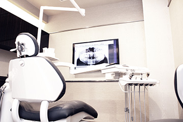
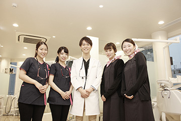
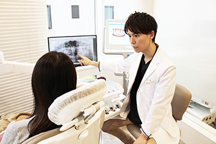
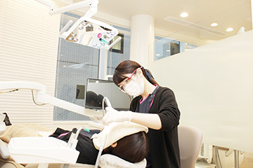
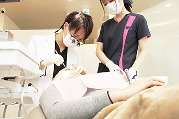

- ホーム
- 求人情報
Staff一緒にはたらくスタッフを募集します
渋谷駅近くの歯医者「渋谷ルーブル歯科・矯正歯科」では一緒に患者様の笑顔のためにはたらいてくださるスタッフを募集します。私たちが求めている歯科医師・歯科衛生士・歯科助手の人物増をご案内します。募集要項やお申込連絡先をご覧ください。
渋谷ルーブル歯科・矯正歯科ではたらく魅力

当院は、矯正歯科治療を中心に、虫歯や歯周病の治療、さまざまな審美治療、ホワイトニング、インプラント治療そして口腔外科など歯科全般に対応しますので、さまざまな治療技術を身につけられます。とくに専門性の高い矯正治療においてもさまざまな種類の矯正システムに対応しますので、技術の向上につながります。医療法人清翔会のドクターが連携して歯科医療をご提供しますので、一緒にはたらくすべてのスタッフが診療技術の向上が可能です。
求める人物像について

いつも笑顔で明るい方を募集します。そして社会人としての自覚と、歯科医療に携わるプロフェッショナル意識を持っている方を求めています。さらに、まわりへの感謝の気持ちを大切にできる方、誰にでも笑顔であいさつできる方、現状維持では飽き足らず向上心を持って仕事に取り組める方、責任感があり仕事をやり遂げる方、ポジティブな考え方ができる方、そしてきれい好きな方……一つでもあてはまる方、そしてこれからそうありたいと思う方はご応募ください。
歯科医師
～将来を考え「開業支援制度」があります～

歯科総合診療医として将来的に自立していただくことが目標です。開業支援制度もある当院では、保険診療も自費診療もバランスよく学べます。とくにインプラント治療や高精度な補綴治療をおこなう精密治療、予防管理システムなど自費治療分野を学べるうえ、勉強会や研修、資格取得制度への支援も充実しています。そして患者様とのコミュニケーションを取るための手法やスタッフとのかかわり、採用・育成のステップなど、歯科医療人として、社会人としてさまざまな観点からスキルアップも可能です。
歯科衛生士
～離職率の低い安定した職場です～

保険診療も自費診療もおこなう当院では、さまざまな治療技術を学べるので、高度な歯科医師のアシスト技術が身につきます。また、予防に力を入れている当院は、口腔ケアのプロフェッショナルとしての誇りを持ち、安心してはたらける環境を整えています。歯科衛生士プロインストラクターや先輩衛生士からの教育を受けたい方や外部研修・セミナーに参加したい方のサポートを充実させ、技術向上につなげていただきます。患者様と歯科医師の間に立つ歯科衛生士さんが歯科医院の運営を大きく左右するのです。一緒によりよい医院づくりをしましょう。
歯科助手

歯科医院にご来院の患者様の第一印象を左右するのは歯科助手さんの笑顔です。明るいあいさつとともに患者様の不安を取り除いてください。そして患者様だけでなくスタッフをやさしくサポートしてください。どなたもはたらきやすい環境づくりを心がけ、充実感や誇りをもってはたらけるようにさまざまな工夫をしています。人のサポートをするのが得意な方、医療分野に興味がある方、人と穏やかにお話ができる方はお気軽にご応募ください。
募集要項
歯科医師
| 診療科目 | 歯科、矯正歯科、歯科口腔外科、小児歯科、インプラント |
|---|---|
| 応募条件 | 研修医終了予定 以上 |
| 雇用形態 | 常勤：週休2日（シフト制）詳しくはご相談ください 非常勤：ご相談ください |
| 給与 | 常勤：月給40万円（研修医終了予定）～ 経験考慮します 非常勤：日給25,000円～ 経験考慮します 試用期間 3ヶ月 （実績） 研修医終了し入社2年目 月給50万円 入社3年目分院長 年収1,000万円超 入社5年目分院長 年収2,000万円超 |
| 賞与 | 年2回 |
| 昇給 | 年1回 |
| 休日 | 週休2日（シフト制）、夏季休暇、年末年始休暇、有給休暇 定休日：祝日、日曜（隔週） |
| 交通費 | 全額支給 |
| 保険 | 雇用保険、労災保険、社会保険、厚生年金 |
| 診療時間 | 平日：10：00～13：00 / 14：30～19：30 土日：10：00～13：00 / 14：00～18：00 |
| 勤務時間 | 平日：9：50～13：15 / 14：30～19：45 土日：9：50～13：15 / 14：00～18：15 |
| その他 |
（実績）
|
| 開業支援制度 | 【パターン1】 【パターン2】 |
歯科衛生士
| 診療科目 | 歯科、矯正歯科、歯科口腔外科、小児歯科、インプラント |
|---|---|
| 応募条件 | 歯科衛生士資格 |
| 雇用形態 | 常勤：週休2.5日（シフト制）詳しくはご相談ください 非常勤：ご相談ください |
| 給与 | 常勤：月給25万円（新卒）～ 経験考慮します 非常勤：時給1,500円～ 経験考慮します 試用期間 3ヶ月 |
| 賞与 | 年2回 |
| 昇給 | 年1回 |
| 休日 | 週休2.5日（シフト制）、夏季休暇、年末年始休暇、有給休暇 定休日：祝日、日曜（隔週） |
| 交通費 | 全額支給 |
| 保険 | 雇用保険、労災保険、社会保険、厚生年金 |
| 診療時間 | 平日：10：00～13：00 / 14：30～19：30 土日：10：00～13：00 / 14：00～18：00 |
| 勤務時間 | 平日：9：30～13：15 / 14：30～19：45 土日：9：30～13：15 / 14：00～18：15 |
| その他 |
（実績）
|
歯科助手
| 担当業務 | 歯科助手業務、受付業務 |
|---|---|
| 応募条件 | 不問（※実務経験あれば歓迎） |
| 雇用形態 | 常勤：週休2.5日（シフト制）詳しくはご相談ください 非常勤：ご相談ください |
| 給与 | 常勤：月給19万円～ 経験考慮します 試用期間 3ヶ月 |
| 賞与 | 年2回 |
| 昇給 | 年1回 |
| 休日 | 週休2.5日（シフト制）、夏季休暇、年末年始休暇、有給休暇 定休日：祝日、日曜（隔週） |
| 交通費 | 全額支給 |
| 保険 | 雇用保険、労災保険、社会保険、厚生年金 |
| 診療時間 | 平日：10：00～13：00 / 14：30～19：30 土日：10：00～13：00 / 14：00～18：00 |
| 勤務時間 | 平日：9：30～13：15 / 14：30～19：45 土日：9：30～13：15 / 14：00～18：15 |
| その他 |
（実績）
|
採用についてのお問い合わせ
採用情報のご質問やご応募に関することは、下記連絡先までお問い合わせください。
| 採用担当者 | 吉田・小池 |
|---|---|
| 電話でのお問い合わせ | 090-6610-6480 |
| メールでのお問い合わせ | tkm.koike@gmail.com |